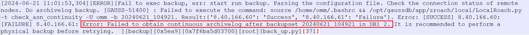

执行GaussDB T的日志备份操作时，任务失败，OceanProtect管理界面的任务详情中显示为“内部错误”。从报错的客户端所在主机获取所有节点的“database_plugin.log”日志文件，可查询到日志报错信息，日志信息示例如下。

GaussDB T会遵循参数的设置自动清理归档日志，归档日志被清理后，根据清理数量的不同，可能会产生以下两种异常场景：
ALTER SYSTEM SET PARAMETER='VALUE'